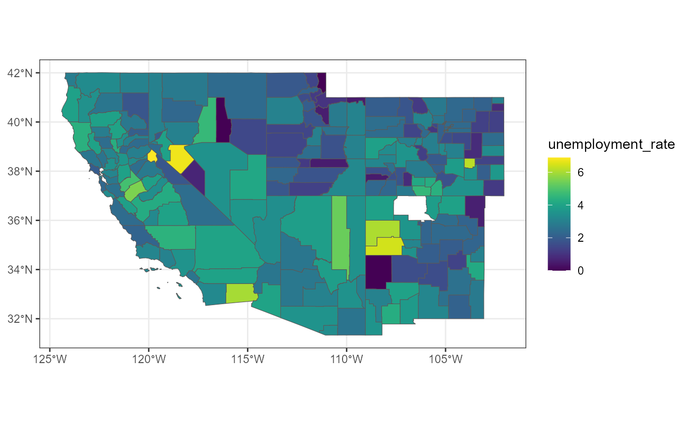
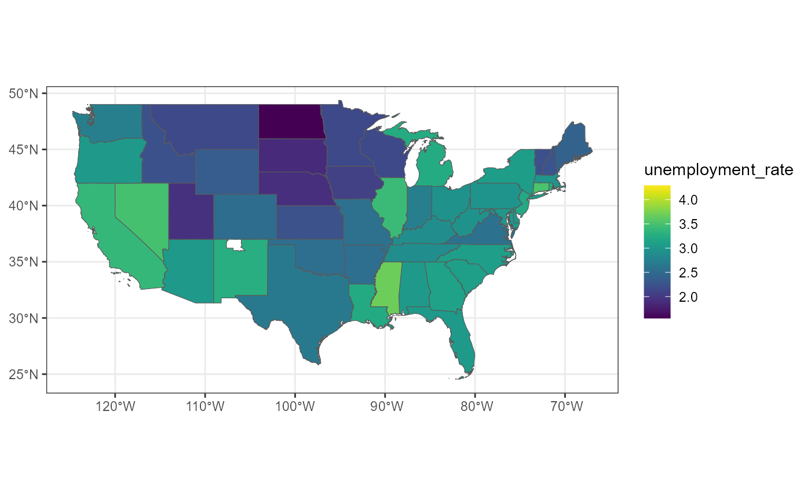

BIS620-final-project.Rmd
# importing all the needed libraries
library(readr)
library(dplyr)
#> Warning: package 'dplyr' was built under R version 4.3.2
#>
#> Attaching package: 'dplyr'
#> The following objects are masked from 'package:stats':
#>
#> filter, lag
#> The following objects are masked from 'package:base':
#>
#> intersect, setdiff, setequal, union
library(sf)
#> Linking to GEOS 3.11.2, GDAL 3.6.2, PROJ 9.2.0; sf_use_s2() is TRUE
sf_use_s2(FALSE)
#> Spherical geometry (s2) switched off
library(ggplot2)
#> Warning: package 'ggplot2' was built under R version 4.3.2
# changing the color palette!!!
library(viridis) # for scale_fill_viridis()
#> Loading required package: viridisLite
library(bis620.2023)
counties$STATE <- gsub(" ", "_", counties$STATE)
counties$centr_coord <- counties$geometry |> st_centroid()
#> Warning in st_centroid.sfc(counties$geometry): st_centroid does not give
#> correct centroids for longitude/latitude data
counties$unemployment_rate <- counties$unemp / counties$pop * 100
counties_flt <- counties |>
filter(STATE %in% c('CALIFORNIA', 'ARIZONA', 'NEVADA', 'UTAH', 'COLORADO', 'NEW_MEXICO'))
p1 <- geographical_visualizer(counties_flt, 'unemployment_rate')
p1
states <- counties |>
select(STATE, unemp, pop) |>
group_by(STATE) |>
summarize(unemp = sum(unemp), pop = sum(pop))
#> although coordinates are longitude/latitude, st_union assumes that they are
#> planar
states$unemployment_rate <- states$unemp / states$pop * 100
p2 <- geographical_visualizer(states |> filter(!(STATE %in% c('ALASKA', 'HAWAII'))),
'unemployment_rate')
p2
counties_features <- feature_extraction(counties) |>
st_drop_geometry() |>
select(-centr_coord)
counties_features |> head(10)
#> # A tibble: 10 × 56m
#> STATE COUNTY unemp pop unemployment_rate dist_to_ALABAMA dist_to_ALASKA
#> <chr> <chr> <dbl> <dbl> <dbl> <dbl> <dbl>
#> 1 ALABAMA Autauga 1065 55200 1.93 0 2762765.
#> 2 ALABAMA Baldwin 4343 208107 2.09 0 2891480.
#> 3 ALABAMA Barbour 918 25782 3.56 0 2885360.
#> 4 ALABAMA Bibb 658 22527 2.92 0 2695682.
#> 5 ALABAMA Blount 909 57645 1.58 0 2627946.
#> 6 ALABAMA Bullock 490 10352 4.73 0 2847930.
#> 7 ALABAMA Butler 567 20025 2.83 0 2836859.
#> 8 ALABAMA Calhoun 4628 115098 4.02 0 2683586.
#> 9 ALABAMA Chambe… 773 33826 2.29 0 2785750.0.
#> 10 ALABAMA Cherok… 581 25853 2.25 0 2656499.9.
#> # ℹ 49 more variables: dist_to_ARIZONA <dbl>, dist_to_ARKANSAS <dbl>,9m
#> # dist_to_CALIFORNIA <dbl>, dist_to_COLORADO <dbl>,
#> # dist_to_CONNECTICUT <dbl>, dist_to_DELAWARE <dbl>,
#> # dist_to_DISTRICT_OF_COLUMBIA <dbl>, dist_to_FLORIDA <dbl>,
#> # dist_to_GEORGIA <dbl>, dist_to_HAWAII <dbl>, dist_to_IDAHO <dbl>,
#> # dist_to_ILLINOIS <dbl>, dist_to_INDIANA <dbl>, dist_to_IOWA <dbl>,
#> # dist_to_KANSAS <dbl>, dist_to_KENTUCKY <dbl>, dist_to_LOUISIANA <dbl>, …9m
max(counties_features$unemp / counties_features$pop)
#> [1] 0.1106046
df_model <- transformation_modeling(counties_features)
df_model |> head(10)
#> # A tibble: 10 × 106m
#> # Groups: STATE [1]
#> proximity_to_ALABAMA proximity_to_ALASKA proximity_to_ARIZONA
#> <dbl> <dbl> <dbl>
#> 1 0 0 0
#> 2 0 0 0
#> 3 0 0 0
#> 4 0 0 0
#> 5 0 0 0
#> 6 0 0 0
#> 7 0 0 0
#> 8 0 0 0
#> 9 0 0 0
#> 10 0 0 0
#> # ℹ 103 more variables: proximity_to_ARKANSAS <dbl>,9m
#> # proximity_to_CALIFORNIA <dbl>, proximity_to_COLORADO <dbl>,
#> # proximity_to_CONNECTICUT <dbl>, proximity_to_DELAWARE <dbl>,
#> # proximity_to_DISTRICT_OF_COLUMBIA <dbl>, proximity_to_FLORIDA <dbl>,
#> # proximity_to_GEORGIA <dbl>, proximity_to_HAWAII <dbl>,
#> # proximity_to_IDAHO <dbl>, proximity_to_ILLINOIS <dbl>,
#> # proximity_to_INDIANA <dbl>, proximity_to_IOWA <dbl>, …9m
sapply(df_model[1:51], max)
#> proximity_to_ALABAMA proximity_to_ALASKA
#> 2.473109 0.000000
#> proximity_to_ARIZONA proximity_to_ARKANSAS
#> 1.139241 2.262929
#> proximity_to_CALIFORNIA proximity_to_COLORADO
#> 2.034626 2.437506
#> proximity_to_CONNECTICUT proximity_to_DELAWARE
#> 2.206484 2.494618
#> proximity_to_DISTRICT_OF_COLUMBIA proximity_to_FLORIDA
#> 3.635817 2.515495
#> proximity_to_GEORGIA proximity_to_HAWAII
#> 2.954395 0.000000
#> proximity_to_IDAHO proximity_to_ILLINOIS
#> 2.066209 2.795828
#> proximity_to_INDIANA proximity_to_IOWA
#> 2.856007 2.737276
#> proximity_to_KANSAS proximity_to_KENTUCKY
#> 2.319146 2.856007
#> proximity_to_LOUISIANA proximity_to_MAINE
#> 2.565384 2.223166
#> proximity_to_MARYLAND proximity_to_MASSACHUSETTS
#> 2.877715 2.890232
#> proximity_to_MICHIGAN proximity_to_MINNESOTA
#> 2.282025 2.211312
#> proximity_to_MISSISSIPPI proximity_to_MISSOURI
#> 2.565384 2.459553
#> proximity_to_MONTANA proximity_to_NEBRASKA
#> 2.277728 2.437506
#> proximity_to_NEVADA proximity_to_NEW_HAMPSHIRE
#> 2.034626 2.223166
#> proximity_to_NEW_JERSEY proximity_to_NEW_MEXICO
#> 3.355737 1.755188
#> proximity_to_NEW_YORK proximity_to_NORTH_CAROLINA
#> 3.355737 2.954395
#> proximity_to_NORTH_DAKOTA proximity_to_OHIO
#> 2.277728 2.710183
#> proximity_to_OKLAHOMA proximity_to_OREGON
#> 2.160542 2.431714
#> proximity_to_PENNSYLVANIA proximity_to_RHODE_ISLAND
#> 2.443622 2.890232
#> proximity_to_SOUTH_CAROLINA proximity_to_SOUTH_DAKOTA
#> 2.837027 2.205677
#> proximity_to_TENNESSEE proximity_to_TEXAS
#> 2.850519 2.199410
#> proximity_to_UTAH proximity_to_VERMONT
#> 1.766659 2.274327
#> proximity_to_VIRGINIA proximity_to_WASHINGTON
#> 3.635817 2.431714
#> proximity_to_WEST_VIRGINIA proximity_to_WISCONSIN
#> 2.710183 2.359193
#> proximity_to_WYOMING
#> 1.726769
df_model$unemp_rate_centered <- df_model$unemployment_rate - df_model$avg_state_unemp
# model1
states <- df_model$STATE |> unique()
X_cols_model1 <- colnames(as.data.frame(df_model) |> select(-c(STATE, unemployment_rate)))[1:100]
y_col_model1 <- "unemployment_rate"
X_cols_model2 <- colnames(df_model)[1:49]
y_col_model2 <- "unemp_rate_centered"
# model1
fs_df1 <- forward_selection_linreg(df_model, X_cols_model1, y_col_model1)
fs_df1
#> var aic rqs adjrsq
#> 1 const 9650.230 0.00000000 0.00000000
#> 2 proximity_to_SOUTH_DAKOTA 9482.466 0.05261311 0.05231130
#> 3 in_ALASKA 9387.645 0.08137072 0.08078523
#> 4 in_MISSISSIPPI 9298.823 0.10755257 0.10669909
#> 5 proximity_to_KANSAS 9230.659 0.12726719 0.12615402
#> 6 proximity_to_MINNESOTA 9161.719 0.14675706 0.14539623
#> 7 in_KANSAS 9089.300 0.16673523 0.16513995
#> 8 proximity_to_MISSISSIPPI 9053.592 0.17667882 0.17483929
#> 9 proximity_to_VIRGINIA 9017.772 0.18653285 0.18445503
#> 10 proximity_to_FLORIDA 8991.259 0.19388380 0.19156663
#> 11 in_CALIFORNIA 8962.888 0.20164080 0.19909014
#> 12 in_SOUTH_CAROLINA 8935.155 0.20916226 0.20638207
#> 13 proximity_to_ARKANSAS 8911.933 0.21548724 0.21247760
#> 14 proximity_to_WYOMING 8892.078 0.22092689 0.21768802
#> 15 in_NORTH_DAKOTA 8872.292 0.22631182 0.22284681
#> 16 in_MINNESOTA 8857.936 0.23033019 0.22663578
#> 17 in_NEBRASKA 8837.599 0.23578422 0.23187018
#> 18 proximity_to_ILLINOIS 8822.331 0.23997402 0.23583683
#> 19 in_MONTANA 8806.984 0.24416001 0.23980219
#> 20 in_TEXAS 8796.089 0.24725662 0.24267407
#> 21 in_UTAH 8784.929 0.25040378 0.24559867
#> 22 proximity_to_ARIZONA 8774.623 0.25333486 0.24830762
#> 23 in_MICHIGAN 8767.090 0.25559756 0.25034520
#> 24 proximity_to_NEBRASKA 8760.293 0.25767950 0.25220199
#> 25 in_ARIZONA 8753.758 0.25969392 0.25399195
#> 26 proximity_to_UTAH 8747.515 0.26163430 0.25570841
#> 27 proximity_to_DISTRICT_OF_COLUMBIA 8741.975 0.26340442 0.25725429
#> 28 in_NEW_JERSEY 8736.914 0.26505853 0.25868416
#> 29 in_OREGON 8733.453 0.26633521 0.25973411
#> 30 proximity_to_NEW_JERSEY 8730.424 0.26750901 0.26068091
#> 31 proximity_to_MONTANA 8727.757 0.26859650 0.26154117
#> 32 in_NORTH_CAROLINA 8725.269 0.26964080 0.26235835
#> 33 in_KENTUCKY 8722.296 0.27079617 0.26328827
#> 34 proximity_to_NORTH_CAROLINA 8719.556 0.27189575 0.26416243
#> 35 proximity_to_TENNESSEE 8715.179 0.27337254 0.26541847
#> 36 in_ILLINOIS 8712.776 0.27439034 0.26621117
#> 37 in_GEORGIA 8710.283 0.27542761 0.26702407
#> 38 in_ALABAMA 8705.500 0.27699074 0.26836962
#> 39 in_FLORIDA 8702.226 0.27820367 0.26936155
#> 40 proximity_to_SOUTH_CAROLINA 8698.973 0.27940980 0.27034724
#> 41 in_WEST_VIRGINIA 8696.848 0.28035534 0.27106961
#> 42 proximity_to_OHIO 8694.258 0.28140639 0.27189935
#> 43 proximity_to_CALIFORNIA 8692.893 0.28217564 0.27244400
#> 44 proximity_to_KENTUCKY 8691.573 0.28293415 0.27297811
#> 45 in_TENNESSEE 8690.408 0.28365625 0.27347565
#> 46 in_HAWAII 8689.882 0.28423220 0.27382523
#> 47 in_CONNECTICUT 8689.497 0.28477542 0.27414182
#> 48 proximity_to_NEW_MEXICO 8689.277 0.28528080 0.27442021
#> 49 in_COLORADO 8687.574 0.28612291 0.27504073
#> 50 proximity_to_INDIANA 8687.492 0.28659581 0.27528658
#> 51 proximity_to_ALASKA 8687.492 0.28659581 0.27528658
#> 52 proximity_to_HAWAII 8687.492 0.28659581 0.27528658
#> 53 in_WASHINGTON 8687.557 0.28703508 0.27549843
#> 54 proximity_to_PENNSYLVANIA 8687.884 0.28741493 0.27565001
#> 55 in_DISTRICT_OF_COLUMBIA 8688.503 0.28772810 0.27573389
#> 56 in_MASSACHUSETTS 8689.250 0.28801222 0.27578827
#> 57 proximity_to_LOUISIANA 8690.107 0.28827110 0.27581700
#> 58 in_NEW_HAMPSHIRE 8691.075 0.28850496 0.27582028
#> 59 proximity_to_VERMONT 8691.804 0.28879294 0.27587867
#> 60 in_VERMONT 8692.848 0.28900924 0.27586410
#> 61 proximity_to_IOWA 8694.114 0.28917548 0.27579851
#> 62 proximity_to_IDAHO 8695.415 0.28933357 0.27572457
#> 63 proximity_to_MICHIGAN 8696.731 0.28948842 0.27564729
#> 64 in_PENNSYLVANIA 8698.067 0.28963851 0.27556510
#> 65 proximity_to_MARYLAND 8699.100 0.28985724 0.27555287
#> 66 in_ARKANSAS 8700.361 0.29002424 0.27548785
#> 67 in_NEW_MEXICO 8701.683 0.29017744 0.27540870
#> 68 proximity_to_GEORGIA 8702.951 0.29034295 0.27534207
#> 69 in_NEVADA 8704.462 0.29045344 0.27521920
#> 70 in_SOUTH_DAKOTA 8705.988 0.29056038 0.27509261
#> 71 proximity_to_MAINE 8707.584 0.29065157 0.27494984
#> 72 in_IOWA 8709.170 0.29074507 0.27480935
#> 73 proximity_to_OREGON 8710.722 0.29084636 0.27467674
#> 74 proximity_to_ALABAMA 8712.321 0.29093677 0.27453289
#> 75 in_LOUISIANA 8713.932 0.29102469 0.27438641
#> 76 in_VIRGINIA 8715.564 0.29110766 0.27423477
#> 77 proximity_to_WEST_VIRGINIA 8717.127 0.29120642 0.27409921
#> 78 in_RHODE_ISLAND 8718.898 0.29125802 0.27391523
#> 79 proximity_to_MASSACHUSETTS 8719.903 0.29148248 0.27390829
#> 80 proximity_to_CONNECTICUT 8721.288 0.29162110 0.27381333
#> 81 in_MAINE 8722.948 0.29169775 0.27365478
#> 82 in_NEW_YORK 8724.420 0.29181684 0.27353965
#> 83 in_OHIO 8726.156 0.29187647 0.27336343
#> 84 proximity_to_TEXAS 8727.927 0.29192814 0.27317893
#> 85 in_MISSOURI 8729.614 0.29199862 0.27301362
#> 86 in_DELAWARE 8731.404 0.29204595 0.27282443
#> 87 in_MARYLAND 8733.203 0.29209123 0.27263300
#> 88 in_OKLAHOMA 8734.946 0.29214907 0.27245436
#> 89 in_IDAHO 8736.713 0.29220158 0.27227013
#> 90 in_INDIANA 8738.483 0.29225340 0.27208506
#> 91 proximity_to_MISSOURI 8740.322 0.29228970 0.27188390
#> 92 proximity_to_NEW_YORK 8742.235 0.29230940 0.27166553
#> 93 proximity_to_COLORADO 8744.176 0.29232274 0.27144046
#> 94 proximity_to_OKLAHOMA 8746.125 0.29233418 0.27121329
#> 95 proximity_to_NORTH_DAKOTA 8748.080 0.29234424 0.27098455
#> 96 proximity_to_WISCONSIN 8750.039 0.29235361 0.27075495
#> 97 proximity_to_DELAWARE 8752.000 0.29236221 0.27052440
#> 98 proximity_to_NEW_HAMPSHIRE 8753.998 0.29236267 0.27028531
#> 99 proximity_to_NEVADA 8755.997 0.29236292 0.27004585
#> 100 proximity_to_WASHINGTON 8757.997 0.29236297 0.26980603
#> 101 proximity_to_RHODE_ISLAND 8759.997 0.29236300 0.26956601
argmin_ind1 <- which.min(fs_df1$aic)
argmin_ind1
#> [1] 50
formula1fs <- paste(sort(fs_df1$var[2:argmin_ind1]), collapse = " + ")
formula1fs <- paste(y_col_model1, '~', formula1fs)
model1fs <- lm(formula1fs, data = df_model)
summary(model1fs)
#>
#> Call:
#> lm(formula = formula1fs, data = df_model)
#>
#> Residuals:
#> Min 1Q Median 3Q Max
#> -3.9784 -0.5583 -0.0831 0.4582 8.5508
#>
#> Coefficients:
#> Estimate Std. Error t value Pr(>|t|)
#> (Intercept) 2.54219 0.04284 59.339 < 2e-16 ***
#> in_ALABAMA 0.46484 0.14502 3.205 0.001363 **
#> in_ALASKA 2.09510 0.18275 11.464 < 2e-16 ***
#> in_ARIZONA 0.96801 0.25628 3.777 0.000162 ***
#> in_CALIFORNIA 0.75603 0.13270 5.697 1.33e-08 ***
#> in_COLORADO 0.26176 0.13887 1.885 0.059527 .
#> in_CONNECTICUT 0.52955 0.34498 1.535 0.124879
#> in_FLORIDA 0.29825 0.12424 2.400 0.016432 *
#> in_GEORGIA 0.52507 0.12911 4.067 4.88e-05 ***
#> in_HAWAII -0.67106 0.43000 -1.561 0.118723
#> in_ILLINOIS 0.31282 0.11666 2.681 0.007372 **
#> in_KANSAS -0.58639 0.11185 -5.243 1.69e-07 ***
#> in_KENTUCKY 0.87413 0.16263 5.375 8.22e-08 ***
#> in_MICHIGAN 0.57811 0.11657 4.959 7.45e-07 ***
#> in_MINNESOTA -0.53675 0.11960 -4.488 7.46e-06 ***
#> in_MISSISSIPPI 1.09531 0.12392 8.838 < 2e-16 ***
#> in_MONTANA -0.53850 0.13804 -3.901 9.79e-05 ***
#> in_NEBRASKA -0.73962 0.13247 -5.583 2.57e-08 ***
#> in_NEW_JERSEY 0.73604 0.21303 3.455 0.000558 ***
#> in_NORTH_CAROLINA 0.84984 0.16256 5.228 1.83e-07 ***
#> in_NORTH_DAKOTA -0.86990 0.15436 -5.636 1.90e-08 ***
#> in_OREGON 0.44457 0.16882 2.633 0.008497 **
#> in_SOUTH_CAROLINA 0.66090 0.15668 4.218 2.54e-05 ***
#> in_TENNESSEE -0.26352 0.13993 -1.883 0.059770 .
#> in_TEXAS -0.05109 0.07644 -0.668 0.503980
#> in_UTAH -0.74203 0.19468 -3.812 0.000141 ***
#> in_WEST_VIRGINIA 0.45537 0.16783 2.713 0.006698 **
#> proximity_to_ARIZONA 1.42840 0.33275 4.293 1.82e-05 ***
#> proximity_to_ARKANSAS 0.36965 0.06843 5.402 7.09e-08 ***
#> proximity_to_CALIFORNIA 0.37412 0.20379 1.836 0.066483 .
#> proximity_to_DISTRICT_OF_COLUMBIA -0.19322 0.08665 -2.230 0.025832 *
#> proximity_to_FLORIDA 0.17852 0.11220 1.591 0.111701
#> proximity_to_ILLINOIS -0.17852 0.05475 -3.260 0.001124 **
#> proximity_to_INDIANA -0.10225 0.07143 -1.431 0.152412
#> proximity_to_KANSAS -0.32103 0.07379 -4.351 1.40e-05 ***
#> proximity_to_KENTUCKY 0.18380 0.06497 2.829 0.004702 **
#> proximity_to_MINNESOTA -0.46498 0.07236 -6.426 1.52e-10 ***
#> proximity_to_MISSISSIPPI 0.40862 0.07417 5.509 3.91e-08 ***
#> proximity_to_MONTANA -0.19641 0.14905 -1.318 0.187673
#> proximity_to_NEBRASKA -0.21655 0.07799 -2.777 0.005525 **
#> proximity_to_NEW_JERSEY 0.25853 0.08173 3.163 0.001576 **
#> proximity_to_NEW_MEXICO -0.28554 0.14099 -2.025 0.042928 *
#> proximity_to_NORTH_CAROLINA 0.26454 0.06553 4.037 5.55e-05 ***
#> proximity_to_OHIO -0.18420 0.06653 -2.768 0.005666 **
#> proximity_to_SOUTH_CAROLINA -0.21868 0.09926 -2.203 0.027656 *
#> proximity_to_SOUTH_DAKOTA -0.22724 0.09666 -2.351 0.018795 *
#> proximity_to_TENNESSEE -0.33211 0.07065 -4.701 2.70e-06 ***
#> proximity_to_UTAH -0.45228 0.18959 -2.386 0.017112 *
#> proximity_to_VIRGINIA 0.11810 0.06956 1.698 0.089667 .
#> proximity_to_WYOMING -0.15036 0.13578 -1.107 0.268218
#> ---
#> Signif. codes: 0 '***' 0.001 '**' 0.01 '*' 0.05 '.' 0.1 ' ' 1
#>
#> Residual standard error: 0.9567 on 3091 degrees of freedom
#> Multiple R-squared: 0.2866, Adjusted R-squared: 0.2753
#> F-statistic: 25.34 on 49 and 3091 DF, p-value: < 2.2e-16
# model2
fs_df2 <- forward_selection_linreg(df_model, X_cols_model2, y_col_model2)
fs_df2
#> var aic rqs adjrsq
#> 1 const 8728.107 0.000000000 0.000000000
#> 2 proximity_to_ARKANSAS 8709.144 0.006651524 0.006335070
#> 3 proximity_to_ARIZONA 8701.470 0.009706477 0.009075315
#> 4 proximity_to_KANSAS 8696.718 0.011832809 0.010887797
#> 5 proximity_to_MINNESOTA 8691.844 0.013992933 0.012735271
#> 6 proximity_to_TENNESSEE 8686.657 0.016246693 0.014677708
#> 7 proximity_to_FLORIDA 8685.232 0.017318859 0.015437530
#> 8 proximity_to_VIRGINIA 8683.765 0.018402696 0.016209533
#> 9 proximity_to_SOUTH_CAROLINA 8682.706 0.019358403 0.016853572
#> 10 proximity_to_NORTH_CAROLINA 8681.137 0.020472017 0.017656383
#> 11 proximity_to_DISTRICT_OF_COLUMBIA 8678.859 0.021805082 0.018679859
#> 12 proximity_to_GEORGIA 8677.505 0.022849226 0.019414052
#> 13 proximity_to_NEW_MEXICO 8676.437 0.023803032 0.020058031
#> 14 proximity_to_NEW_JERSEY 8675.771 0.024631225 0.020576286
#> 15 proximity_to_NEBRASKA 8675.593 0.025307386 0.020942160
#> 16 proximity_to_OHIO 8675.153 0.026064354 0.021389463
#> 17 proximity_to_ALASKA 8675.153 0.026064354 0.021389463
#> 18 proximity_to_HAWAII 8675.153 0.026064354 0.021389463
#> 19 proximity_to_MISSOURI 8675.315 0.026634089 0.021648860
#> 20 proximity_to_UTAH 8676.039 0.027029271 0.021732921
#> 21 proximity_to_TEXAS 8676.692 0.027446376 0.021839084
#> 22 proximity_to_MISSISSIPPI 8677.460 0.027827957 0.021909576
#> 23 proximity_to_SOUTH_DAKOTA 8678.350 0.028171299 0.021941627
#> 24 proximity_to_MASSACHUSETTS 8679.449 0.028450014 0.021908638
#> 25 proximity_to_INDIANA 8680.523 0.028736471 0.021883425
#> 26 proximity_to_MICHIGAN 8681.432 0.029073678 0.021909320
#> 27 proximity_to_ALABAMA 8682.488 0.029365528 0.021889524
#> 28 proximity_to_MARYLAND 8683.534 0.029660397 0.021872760
#> 29 proximity_to_LOUISIANA 8684.865 0.029866853 0.021766834
#> 30 proximity_to_CALIFORNIA 8686.375 0.030018404 0.021605458
#> 31 proximity_to_PENNSYLVANIA 8687.985 0.030138854 0.021412597
#> 32 proximity_to_OREGON 8689.679 0.030233193 0.021193258
#> 33 proximity_to_CONNECTICUT 8691.370 0.030328530 0.020974786
#> 34 proximity_to_RHODE_ISLAND 8693.129 0.030402912 0.020735009
#> 35 proximity_to_MAINE 8694.966 0.030453183 0.020470719
#> 36 proximity_to_MONTANA 8696.840 0.030492249 0.020194935
#> 37 proximity_to_NEVADA 8698.736 0.030524419 0.019912001
#> 38 proximity_to_WASHINGTON 8700.632 0.030556456 0.019628751
#> 39 proximity_to_ILLINOIS 8702.527 0.030588892 0.019345722
#> 40 proximity_to_COLORADO 8704.456 0.030610629 0.019051684
#> 41 proximity_to_WEST_VIRGINIA 8706.404 0.030626727 0.018751748
#> 42 proximity_to_VERMONT 8708.361 0.030639961 0.018448719
#> 43 proximity_to_NORTH_DAKOTA 8710.321 0.030652468 0.018144758
#> 44 proximity_to_OKLAHOMA 8712.286 0.030663189 0.017838792
#> 45 proximity_to_NEW_YORK 8714.259 0.030671650 0.017530336
#> 46 proximity_to_IDAHO 8716.248 0.030675024 0.017216524
#> 47 proximity_to_IOWA 8718.241 0.030677154 0.016901248
#> 48 proximity_to_NEW_HAMPSHIRE 8720.238 0.030678085 0.016584552
#> 49 proximity_to_DELAWARE 8722.238 0.030678122 0.016266743
#> 50 proximity_to_KENTUCKY 8724.238 0.030678139 0.015948709
argmin_ind2 <- which.min(fs_df2$aic)
argmin_ind2
#> [1] 16
formula2fs <- paste(sort(fs_df2$var[2:argmin_ind2]), collapse = " + ")
formula2fs <- paste(y_col_model2, '~', formula2fs)
model2fs <- lm(formula2fs, data = df_model)
summary(model2fs)
#>
#> Call:
#> lm(formula = formula2fs, data = df_model)
#>
#> Residuals:
#> Min 1Q Median 3Q Max
#> -3.9144 -0.5575 -0.0811 0.4564 8.9394
#>
#> Coefficients:
#> Estimate Std. Error t value Pr(>|t|)
#> (Intercept) 0.02258 0.02396 0.942 0.34616
#> proximity_to_ARIZONA 0.96878 0.32753 2.958 0.00312 **
#> proximity_to_ARKANSAS 0.29845 0.06177 4.832 1.42e-06 ***
#> proximity_to_DISTRICT_OF_COLUMBIA -0.23196 0.08379 -2.768 0.00567 **
#> proximity_to_FLORIDA 0.19601 0.08538 2.296 0.02176 *
#> proximity_to_GEORGIA -0.11551 0.05711 -2.023 0.04320 *
#> proximity_to_KANSAS -0.15486 0.06162 -2.513 0.01202 *
#> proximity_to_MINNESOTA -0.16706 0.06627 -2.521 0.01176 *
#> proximity_to_NEBRASKA -0.10251 0.06555 -1.564 0.11793
#> proximity_to_NEW_JERSEY 0.11473 0.07807 1.470 0.14179
#> proximity_to_NEW_MEXICO -0.23341 0.12474 -1.871 0.06143 .
#> proximity_to_NORTH_CAROLINA 0.12397 0.05250 2.361 0.01828 *
#> proximity_to_OHIO -0.08121 0.05211 -1.558 0.11922
#> proximity_to_SOUTH_CAROLINA -0.16177 0.06660 -2.429 0.01520 *
#> proximity_to_TENNESSEE -0.12818 0.04854 -2.641 0.00832 **
#> proximity_to_VIRGINIA 0.13035 0.05087 2.562 0.01044 *
#> ---
#> Signif. codes: 0 '***' 0.001 '**' 0.01 '*' 0.05 '.' 0.1 ' ' 1
#>
#> Residual standard error: 0.96 on 3125 degrees of freedom
#> Multiple R-squared: 0.02606, Adjusted R-squared: 0.02139
#> F-statistic: 5.575 on 15 and 3125 DF, p-value: 2.231e-11